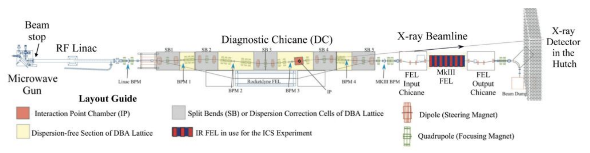

Summary
A Free Electron Laser is a powerful radiation amplifying tool with many different applications. For example, it can be used as a research tool for studying on a molecular level, with a wide range of tunable wavelengths, or as a high-intensity laser for defense.

Current Goals
Because the FEL has been inoperative since 2016, several vacuum leaks have been sprung, and parts have worn from time. Currently, we are working to fix four different vacuum leaks. A new electron gun (thermionic) has already been produced.

Project Lead
The lead of the research project is Siqi Li, an assistant Professor to Niels Bidault and graduate from Stanford University with office at WAT 206